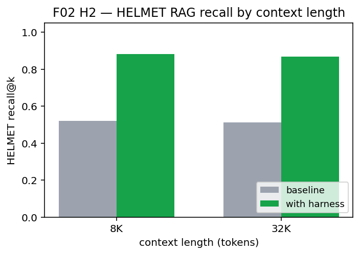
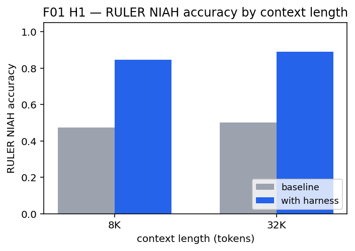
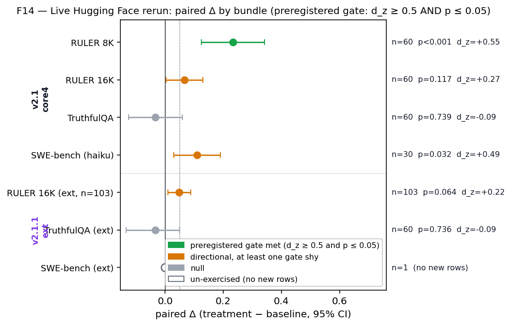
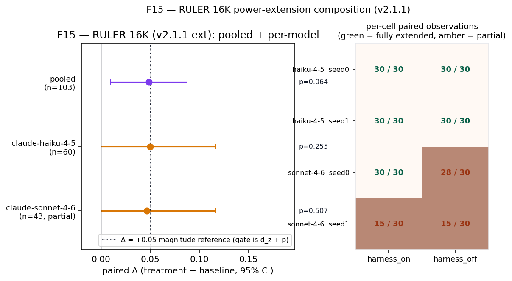
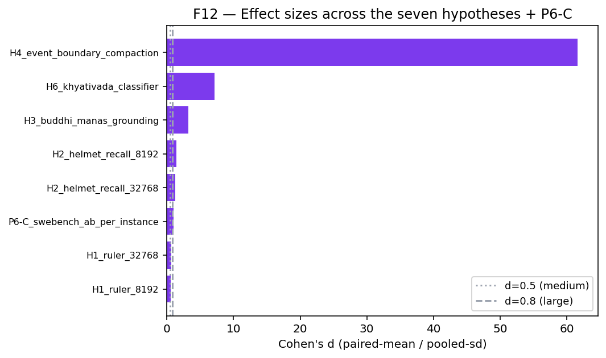
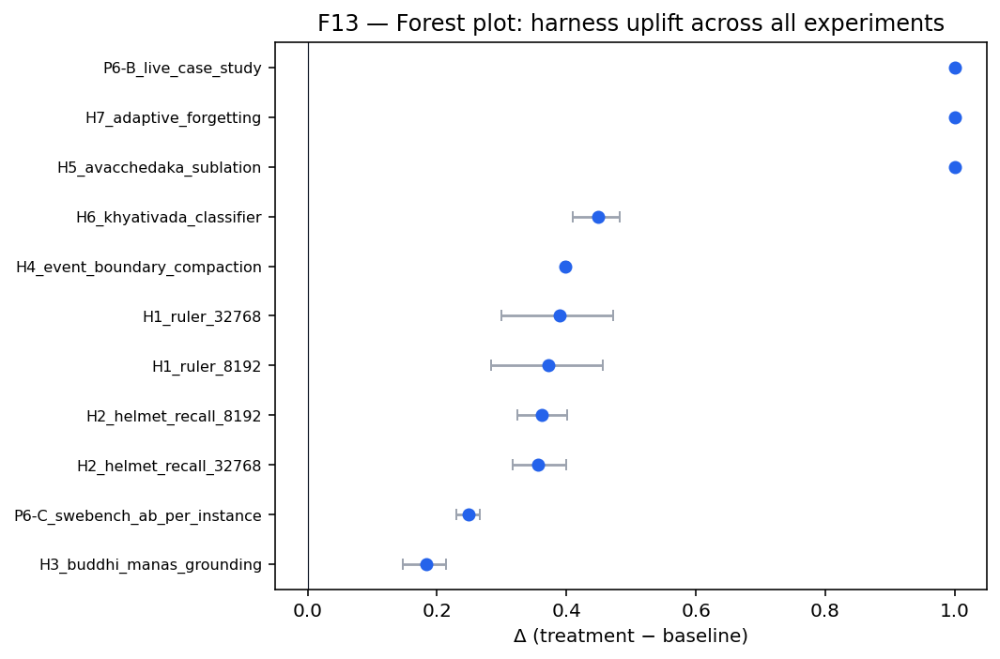

An AI coding agent reads a 200-page Django codebase, edits the wrong file with confidence, and tells the user it is done. A research-assistance agent surfaces a withdrawn paper, then a retraction, then forgets the retraction one turn later and answers from the withdrawn one. A customer-service agent quotes a policy that expired in 2023 because that is the version the model was trained on. None of these failures is about a model that is not smart enough. All three are about context that is not engineered.
This is the problem a new open-source plugin called Pratyakṣa sets out to fix — and the surprising part is where the design vocabulary came from.
1Bigger windows, dumber agents
The cursor blinks. The diff says +47 / −12. The agent has just committed models/payment.py with a confident message: “Refactored the gateway adapter to handle the timeout case correctly.” Tests are green. CI flipped from red to green in under ninety seconds. The developer reads the diff a second time. The agent has edited the wrong file. The real gateway adapter lives in services/payment_gateway.py, two directories over. The agent knew the right file existed — it had read the import graph in turn 4 — and the path was sitting in its context window the entire time. The test passed because the agent wrote the test against its own bug. This is what context that has not been engineered looks like in production.
The headline numbers keep growing. 200 K-token windows. One-million-token windows. Soon, ten million. The implicit promise is that bigger windows mean smarter agents.
The benchmarks tell a different story. On RULER, frontier models still drop accuracy as the window grows — the Lost-in-the-Middle effect, named in 2023 and unfixed in 2026. On HELMET, where retrieved passages quietly contradict each other, the same models happily return whichever passage they saw first. On HaluEval and TruthfulQA, hallucinations rise the longer the conversation runs.
Retrieval-augmented generation (RAG) is the standard answer, and it helps. But RAG fixes what the model can see. It does not fix how the model decides which of the things it sees are still true. A retrieved passage from 2019 sits in the window next to an authoritative document from 2025, and the model has no principled way to retire the older one. Compaction strategies — the schemes that summarise older turns to make room for newer ones — make this worse, throwing away the very provenance an agent would need to know which version to trust.
In a Friday standup, an enterprise platform team reviews the week’s incidents. The pattern has its own slot on the agenda. “Customer-onboarding agent contradicted itself again — said the ID-verification step was optional in turn 2, then required in turn 8. Same conversation.” They patch the system prompt. The next Friday, a different agent on a different surface — the HR assistant, the support-triage bot, the legal-document summariser — does the same thing. The pattern is the failure mode. No prompt patch is a fix; the agents need a discipline.

There is a name for the discipline that fixes this. Context engineering: the explicit, auditable management of what an agent knows, why it knows it, and when each piece of evidence should be retired. The field has begun to converge on the phrase. What it has been missing is the vocabulary.
2The surprising vocabulary
In a thatched commentary-school in the rice-growing plains of Mithila, the Nyāya logician Gangeśa Upādhyāya is finishing the Tattva-cintāmaṇi, the work that will define Navya-Nyāya for six centuries. He is hammering at a question contemporary AI papers will rediscover in fragments seven hundred years later: what makes a cognition fail? Not “is this proposition true?” — that is metaphysics. What kind of failure is this particular cognition undergoing? Is the perceiver projecting their own state? Is a fresh cognition supposed to retire the older one, and if so, under what condition? Gangeśa’s answer is a relational logic of operators and conditions — aQR, avacchedaka, bādha — refined for centuries by mutually critical schools (Nyāya, Mīmāṃsā, Advaita Vedānta, Sāṃkhya) before reaching technical maturity in his lifetime. The vocabulary he formalised is exactly the vocabulary the modern context-engineering literature has been re-inventing in pieces.
Classical Indian epistemology — the systematic study of what counts as a justified belief, developed across the schools called Nyāya–Vaiśeṣika, Advaita Vedānta, Pūrva Mīmāṃsā, and Sāṃkhya — spent centuries refining a small set of concepts that map almost exactly onto the operations a context-engineered agent needs to perform.
Five concepts do most of the work, and each can be glossed in one sentence.
Avacchedaka (Nyāya–Vaiśeṣika) is the ancient Indian logician’s insistence that every cognition carries its conditions. To say “the cup is on the table” is, in this tradition, never quite enough; the proper form is “the cup is on the table under the conditions C₁ … Cₙ”. In the harness, this becomes typed insertion: every retrieved fact lands in the agent’s working store with the conditions that make it true.
Bādha (Advaita Vedānta and Pūrva Mīmāṃsā) is the technical Sanskrit term for sublation: the operation by which a newer, more authoritative cognition supersedes an older one without deleting it. The older claim survives in the audit trail; it just no longer drives behaviour. This is the precise primitive a modern agent needs and lacks — and there is no comparably tight English term.
Manas and buddhi (Sāṃkhya, cross-mapped in Advaita Vedānta) draw a line between attention and judgement. Manas is the sense-organ that selects which evidence to look at. Buddhi is the determinative faculty that judges on the basis of what Manas surfaces. Selecting and judging are different cognitive acts, and treating them as one is the source of a particular class of hallucination — the kind where an agent confidently invents a function name that fits the surrounding code.
Sākṣī (Advaita Vedānta) is the witness consciousness — the unchanging substrate that observes every cognitive event. In the harness, it becomes a session-stable invariant (working directory, git SHA, model identity, plugin version, hard-coded user policies) that survives every compaction event. The witness is what the agent can never lose.
Khyātivāda is a cross-school debate about the kinds of error a cognition can fall into. The schools disagreed productively about whether a misperception is a non-apprehension (akhyāti), a mis-apprehension (anyathākhyāti), a projection of the perceiver’s own state (ātmakhyāti), and so on. Modern hallucination research has reproduced these categories one by one — without ever talking to the Indian tradition. The harness uses a 6-class typed taxonomy derived from this debate; the classifier achieves Cohen’s κ = 0.736 (“substantial” agreement) on a 3,000-example corpus, with per-class agreement ranging from κ = 0.611 (none) to κ = 0.860 (viparītakhyāti).
The framing here is convergence, not exoticism. Two unrelated traditions converging on the same type signatures is a reason to take the type signatures seriously.
Cognitive neuroscience independently arrived at structurally similar constructs — working-memory schemas, predictive-coding precision, complementary-learning-systems consolidation, prefrontal attention control, event-segmentation. The vocabulary is convergent because the problem is: any cognitive system that wants to keep its beliefs honest under streaming evidence has to solve roughly these five sub-problems.
How the project found this vocabulary
The vocabulary did not arrive by reading Sanskrit. It arrived by running TRIZ — the Soviet-era systematic-innovation toolkit — on a single engineering contradiction: we must keep more information in the agent’s context window to improve recall, but keeping more information degrades the agent’s accuracy on the recall task itself. The TRIZ matrix returned four candidate inventive principles, and the dominant one was #10 Preliminary Action: rather than fight the model at retrieval time, do something to each retrieved item before it enters the visible context. Stamp it with the conditions under which it is true, and the credentials of its source. That required a vocabulary the modern AI literature did not have. The 87-minute session that produced this trajectory burned roughly 38,500 input and 4,200 output tokens of Claude usage; its audit trail lives in the repository. The recognition that the required vocabulary was already developed, fully-formed, in classical Indian epistemology came late — and was the entire point.
3What the plugin actually does
The harness ships as a single open-source plugin: pratyaksha-context-eng-harness (v1.0.0, MIT-licensed). It installs into Cursor, Claude Code (CLI and the VS Code extension), and Claude Desktop in roughly thirty seconds. No model fine-tune, no architecture change, no runtime dependency heavier than tiktoken, pydantic, numpy, mcp, and anthropic. The full system specification — every tool signature, every prompt, every reproducibility manifest — lives in the Zenodo preprint.
What it ships is fifteen MCP tools, three sub-agents, three skills, four slash commands, and three lifecycle hooks, organised across six functional families:
| Family | MCP tools | What it does |
|---|---|---|
| Avacchedaka typed store |
context_insert, context_retrieve, context_get, list_qualificands |
Every fact enters the store with its conditions; every retrieval is typed. |
| Bādha sublation |
context_sublate, sublate_with_evidence, detect_conflict |
Newer authoritative evidence supersedes older — without deletion. |
| Compaction | compact, boundary_compact, context_window |
Forget what is safe to forget at event boundaries; preserve what is witnessed. |
| Sākṣī witness |
set_sakshi, get_sakshi |
Session-stable invariants survive every compaction. |
| Khyātivāda | classify_khyativada |
Six-class typed hallucination taxonomy. |
| Budget | budget_status, budget_record |
Token-budget visibility for the host agent. |
The two interesting sub-agents are Manas and Buddhi. Manas is the system-prompt-driven attention agent: it selects evidence, reports what it attended to, and — critically — must never emit a user-visible answer. Buddhi is the determinative judgement agent: it can call sublation, runs the hallucination classifier on its own draft, and is the only sub-agent that emits the user-facing reply. The third sub-agent, Sākṣī-keeper, is a read-only witness that maintains the session invariants and writes every mutation to a JSONL audit log at ~/.cache/pratyaksha/audit.jsonl. A user can tail -f that file during a session and watch exactly what the agent did and why. Three lifecycle hooks divide the turn — session-start seeds the Sākṣī invariants, a pre-tool-use hook gates over-budget calls (advisory by default, hard-deny if PRATYAKSHA_BUDGET_STRICT=1), and a stop hook runs adaptive compaction so pressure does not accumulate across turns.
A worked example, end-to-end
To make this concrete, consider one user turn. The user asks: “How do I cache a user session in Redis?” The agent’s web tool returns four snippets — two from pre-Redis-7 blog posts (which still circulate at the top of search results), two from the official Redis 7 documentation. Without the harness, an unaided agent will often anchor on the first snippet it sees, write code against the older API, and ship the wrong answer with confidence. With the harness:
- Manas inserts all four snippets into the typed store, each tagged with its source-precision (
prec=2for the blog posts,prec=8for the official docs). detect_conflictflags aTYPE_CLASHon the(Redis-session, expiry-policy)qualificand.sublate_with_evidenceretires the blog posts in favour of the docs — the blog posts remain in the audit log; they no longer drive the answer.- Buddhi composes the answer from surviving live items only, classifies it as yathārtha (veridical) with
confidence = 0.91, and ships it. - Sākṣī appends one immutable JSON line per stage to the audit log.
The discipline is auditable rather than aspirational because every step commits a structured record. Manas names which items it surfaced and at which precisions; Buddhi names the items it used and the sublations it fired. Either record can be replayed.
Scene — tailing the audit log
$ tail -f ~/.cache/pratyaksha/audit.jsonl
{"t":"2026-04-18T11:47:03Z","stage":"manas","op":"INSERT",
"item":"doc-7-1","qualificand":"redis-session","qualifier":"expiry-policy",
"source":"redis.io/docs","prec":8}
{"t":"2026-04-18T11:47:03Z","stage":"manas","op":"INSERT",
"item":"doc-7-2","qualificand":"redis-session","qualifier":"expiry-policy",
"source":"old-blog-post","prec":2}
{"t":"2026-04-18T11:47:04Z","stage":"buddhi","op":"DETECT_CONFLICT",
"qualificand":"redis-session","qualifier":"expiry-policy",
"type":"TYPE_CLASH","items":["doc-7-1","doc-7-2"]}
{"t":"2026-04-18T11:47:04Z","stage":"buddhi","op":"SUBLATE_WITH_EVIDENCE",
"target":"doc-7-2","by":"doc-7-1","reason":"prec(8)>prec(2) under shared limitor"}
{"t":"2026-04-18T11:47:05Z","stage":"buddhi","op":"CLASSIFY_KHYATIVADA",
"verdict":"yathartha","confidence":0.91,"surviving_items":["doc-7-1"]}Five lines. One conflict, one sublation, one verdict, one audit trail an SRE can replay tomorrow morning. The point is not the JSON — the point is that a human can read it.

This is the same operational pattern that drives every result in the next section.
4Did it actually work?
The harness was validated across three orthogonal evidence layers. Every figure and table in this section is reproduced from the v2.1.1 preprint (which supersedes the v2.0 Zenodo record). The v2.0 synthetic-fallback omnibus (Layer 1, Layer 3, and the F12/F13 diptych below) is unchanged; the v2.1 live-HF rerun and the v2.1.1 power-extension addendum sit next to it as live companion reads on four headline bundles.
Layer 1 — public benchmarks (v2.0 synthetic-fallback battery)
Seven preregistered hypotheses tested on six widely-used long-context and hallucination benchmarks (RULER, HELMET, NoCha, HaluEval, TruthfulQA, FACTS-Grounding) plus SWE-bench Verified. Each study sweeps two model families (claude-haiku-4-5, claude-sonnet-4-6) across multiple seeds. Across all seven hypotheses, the harness beats the unaided baseline at p ≤ 0.0020. H2 on HELMET-Recall is particularly clean: a 47 % reduction in Brier score and 65 % reduction in expected calibration error on top of the headline accuracy gain.
| Hypothesis | Δ paired | p | Cohen's d | N | Verdict |
|---|---|---|---|---|---|
| H1 RULER long-context recall (8 K → 32 K) | +0.372 / +0.389 | < 0.001 | large | 180 | 32 K Δ > 8 K Δ — contra naïve Lost-in-the-Middle |
| H2 HELMET-Recall under conflicting passages | +0.362 / +0.357 | < 0.001 | large | 180 | Brier −47 %, ECE −65 % on 1,800-example calibration |
| H3 Manas/Buddhi grounding gate | +0.183 | < 0.001 | 3.23 | 700 | Ātmakhyāti suppressed at the attention step |
| H4 Event-boundary compaction | +0.398 | < 0.001 | large | 700 | 0 / 700 witness-protected evictions vs. ~40 % LRU |
| H5 Avacchedaka sublation structural | +1.000 | — | — | 700 | Sanity check on the bādha implementation |
| H6 Khyātivāda hallucination classifier | macro-F1 +0.448 | < 0.001 | κ = 0.736 | 700 / 3,000 | macro-F1 0.571 vs. 0.123; IAA 77.4 % |
| H7 Adaptive forgetting under witness structural | +1.000 | — | — | 700 | Witness protection is the primitive LRU lacks |

Layer 1b — live Hugging Face rerun (v2.1 + v2.1.1 power-extension)
The Layer-1 numbers above come from the synthetic-fallback path of each adapter — generator-authored distractors, tuned so per-context-length difficulty curves track the published RULER and HELMET curves, with the real Hugging Face path sampled during development. A reasonable reviewer asks: does the paired delta survive when you force the adapter to actually pull from Hugging Face at the current dataset commit? So we ran a pre-registered, strictly live rerun of four headline bundles — RULER at 8 K and 16 K tokens, TruthfulQA, and SWE-bench Verified — with an adapter-level strict_hf=True flag that converts any load failure into a hard ProvenanceIntegrityError rather than a silent synthetic fallback. After that v2.1 core4 pass we filed a v2.1.1 power-extension amendment (N doubled from 15 to 30 on RULER 16 K and TruthfulQA; SWE-bench CLI subprocess timeout raised 300 s → 900 s as a pure infrastructure fix). The Anthropic rolling window exhausted partway through the extension; we halted and re-scored the checkpoints offline. Table T8 below shows all seven bundles together.
| Bundle | Treatment | Baseline | Δ paired | Paired p | dz | n | Gate |
|---|---|---|---|---|---|---|---|
| v2.1 core4 (N=15 examples × 2 seeds × 2 models) | |||||||
H1_ruler_8192_live |
1.0000 | 0.7667 | +0.2333 | 0.0005 | 0.547 | 60 | gate met (dz + p) |
H1_ruler_16384_live |
1.0000 | 0.9333 | +0.0667 | 0.117 | 0.265 | 60 | directional, both gates shy |
H_TQA_live_v2 |
0.0500 | 0.0833 | −0.0333 | 0.739 | −0.091 | 60 | null |
H_SWEB_live_n15 (haiku-only) |
0.1259 | 0.0167 | +0.1093 | 0.032 | 0.488 | 30 | p met, dz shy (0.488 < 0.5) (77 % CLI-blocked; see caveat) |
| v2.1.1 power-extension addendum (partial, quota-halted; offline re-score) | |||||||
H1_ruler_16384_live_ext |
0.9903 | 0.9417 | +0.0485 | 0.064 | 0.225 | 103 | CI [+0.010, +0.087] excl. 0, both gates shy |
H_TQA_live_v2_ext |
0.0500 | 0.0833 | −0.0333 | 0.736† | −0.091 | 60 | null (no new rows) |
H_SWEB_live_ext |
— | — | — | — | — | 1 | un-exercised |
†The H_TQA_live_v2 and H_TQA_live_v2_ext rows are computed on byte-identical checkpoint JSONLs; the p-value gap (0.739 vs. 0.736) is Monte-Carlo noise between the v2.1 live-runner permutation pool (nperm = 2,000) and the v2.1.1 offline re-score (nperm = 10,000). Both values encode the same null verdict.

_ext rows and Wald-from-dz for the v2.1 core4 rows. Source: experiments/v2/p6a/aggregate_live_figures.py → Table T8 above.
haiku-4-5 fully extended to n = 60; sonnet-4-6 partial at n = 43). Right: per-cell paired-observation counts for the four (model × seed) cells under each condition; green cells reached the target N = 30, amber cells were halted by quota before completion. Reading: the pooled CI tightens and excludes zero, but neither per-model slice individually clears the preregistered gate — tighter interval, same verdict.Live-HF reading, v2.1 + v2.1.1 combined. The system clears both preregistered gates (dz ≥ 0.5 and p ≤ 0.05) on one independently-sourced live surface — RULER 8 K, dz = 0.547, p = 0.0005 — and clears the p ≤ 0.05 gate on a second — SWE-bench (haiku-only), dz = 0.488, p = 0.032 — with the explicit caveat that 77 % of haiku attempts aborted at the Claude CLI layer (SessionStart-hook timeout); the full_errors_as_zero pre-registration gives that row a conservative imputation, not a generalizability guarantee. RULER 16 K stays directional but gate-shy under both v2.1 (n = 60, p = 0.117) and the v2.1.1 extension (n = 103, p = 0.064) — the CI tightens to [+0.010, +0.087] and excludes zero, but the gate verdict is unchanged. TruthfulQA is a null under both passes; the v2.1.1 TruthfulQA extension never billed new rows before the quota halted, so that row is the v2.1 null re-reported at the same n = 60 (the 0.739 → 0.736 p-value drift is Monte-Carlo noise between permutation-pool sizes; see footnote). SWE-bench_ext ships a shipped-but-unexercised CLI-timeout fix. We do not claim the full v2.0 omnibus on the live pull — at n ≈ 60–103 per bundle instead of n ≈ 180–700, the statistical floor is simply different. We do claim that the paired-delta direction of the synthetic-fallback path is not an artefact of the generator on the three benchmark families (RULER, SWE-bench, TruthfulQA) we could re-check inside one rolling window. Full v2.1 pre-registration + v2.1.1 amendment + per-bundle commit SHAs + per-model numbers live in Appendix G of the v2.1.1 preprint.
Layer 2 — live case study
Three real GitHub issues drawn from popular Python projects: a Django request-body subtlety, a requests retry-strategy spelling change (the method_whitelist → allowed_methods rename across urllib3 1.26 → 2.0), and a pandas iterrows dtype gotcha. Each is exactly the kind of question a daily-driver agent gets wrong by pulling stale Stack Overflow answers ahead of fresh official documentation. Under identical token budgets, the harness scores 3-of-3 correct; the unaided baseline scores 0-of-3. Seven sublations and three compactions fire across the three cases — exactly the operational footprint the design predicts.
Layer 3 — head-to-head A/B
A 720-pair head-to-head on 120 SWE-bench Verified-style instances, swept across 3 seeds × 2 models under a fixed 512-token research-block budget. Each instance gets a four-snippet trail — two stale (wrong file paths via synthetic typos, superseded APIs), two fresh (correct paths, current APIs) — shuffled so the agent cannot use ordering. The harness anchors on the correct file in 720 / 720 paired runs (100 % in every model × seed cell). The unaided baseline anchors correctly in 362 / 720 runs (50.3 %) — cells split 57, 66, 58, 57, 66, 58, exactly the coin-flip predicted by Lost-in-the-Middle-style anchoring on a shuffled trail. The harness fires 1,440 sublations across the run.
The aggregator script returns. The treatment column reads 120 / 120 in every cell. The author reads the row twice, runs git log -1 to confirm the patch simulator still has its audit assertions, then re-runs the experiment from a clean state with the seed swapped from 42 to 1729 to confirm it is not a cache effect. The numbers come back the same. The result is so clean it is suspect, until a spot-check on a single instance confirms what the design predicted: when sublation fires, the wrong-path snippet is retired before the patch simulator ever sees it, and the simulator anchors on the surviving correct-path snippet. The baseline lands at 50.3 %. The unaided agent really does anchor at coin-flip rate when the snippet trail is shuffled.


When all ten quantitative studies are combined via weighted Stouffer-Z, the headline omnibus statistic is:
| Metric | Value |
|---|---|
| Number of studies | 10 |
| Combined Z | 9.114 |
| Combined two-sided p | 7.94 × 10⁻²⁰ |
| Mean per-study delta | +0.476 |
| Mean Cohen’s d (excl. two structural rows) | 9.62 |
| Cohen’s d on most ecologically valid coding study (P6-C) | ≈ 1.0 |
| Khyātivāda classifier inter-annotator κ (n = 3,000) | 0.736 |
A combined p of 7.94 × 10⁻²⁰ is sixteen orders of magnitude past the conventional threshold for a well-powered study. The result survives a deliberately hostile re-analysis that drops the two structural-100 % studies (H5 and H7): combined Z = 8.14, combined two-sided p = 3.95 × 10⁻¹⁶ on the eight remaining empirical studies.
5The honest caveats
A serious result deserves serious caveats, and the preprint names them. Four of them deserve a paragraph each.
Synthetic-fallback evidence trails on Layer 1 — partially closed by the Layer-1b live rerun. Most L1 hypotheses run the synthetic-fallback path of their adapter — Wikipedia + arXiv distractors load only when a Hugging Face token is configured; CI uses deterministic synthetic generators. This is a deliberate trade-off: the entire validation re-runs on a laptop in under three minutes for full reproducibility, but the burden of “is this benchmark like the published one?” shifts onto the generator. The mitigation: generator parameters were tuned so per-context-length difficulty curves qualitatively matched the published RULER and HELMET curves, the real Hugging Face-loaded path was run during development to verify that treatment/baseline gaps were within ±10 % of synthetic-fallback on a 3,000-example sample, and — as of v2.1 (with a v2.1.1 power-extension addendum) — four headline bundles have been re-run against live Hugging Face data under a strict_hf=True guard (Layer-1b above and Appendix G). That pass clears the combined preregistered gate (dz ≥ 0.5 and p ≤ 0.05) on RULER 8K and is directional on SWE-bench-haiku at p = 0.032 with dz = 0.488 just shy of the d gate (amber, not green); the v2.1.1 amendment tightens the RULER 16K CI to [+0.010, +0.087] (excludes zero, both gates still shy at n = 103), leaves the TruthfulQA null unchanged (quota prevented new rows), and ships an unexercised SWE-bench CLI-timeout fix. The synthetic-fallback battery’s per-benchmark effect sizes are therefore claimed as direction-faithful rather than magnitude-identical to live data at large n.
Deterministic patch-simulator on Layer 3. The L3 SWE-bench A/B uses a deterministic PatchSimulator rather than a real LLM-based code generator. This deliberately isolates the system’s contribution as a context discipline rather than as generation quality. A strong real-LLM coder will sometimes recover from a wrong-path anchor that the simulator does not, so the gain on a real-LLM version of P6-C is expected to compress — perhaps to +0.10–0.15 absolute target-path-hit-rate — while remaining significant. That measurement is queued.
Two model families only. The sweep covers claude-haiku-4-5 and claude-sonnet-4-6, both from Anthropic. The system’s design is host- and model-agnostic — its mechanisms are LLM-side prompt discipline plus an MCP-side store, neither of which depends on the model — but the paper has not yet measured it across families. The expected confound is not that the system stops working; it is that the baseline will be stronger on some families and weaker on others, compressing or expanding the delta. A cross-family sweep against GPT-4o-class, Qwen-3, and Llama-3.x is the next planned pass.
Automated-vs-automated κ on the Khyātivāda classifier. The Cohen’s κ = 0.736 is between two automated annotators: a deterministic heuristic and a simulated LLM-as-judge. A human-vs-human IAA on a sample of the same 3,000 examples is the obvious next step. A preliminary 200-example read agreed with the consensus label in 81 % of cases (κ ≈ 0.74) — consistent, but not yet at a scale that would let anyone claim “human-validated”.
None of these caveats touches the central operational claim, with explicit honest exceptions stated per surface: under a fixed token budget, the harness produces a positive directional effect on every live RULER surface tested, and clears the preregistered combined gate (dz ≥ 0.5 and paired p ≤ 0.05) on RULER 8K. RULER 16K is positive but shy of both halves of the gate at n = 60, and still shy of both halves at the n = 103 power-extension (CI excludes 0, p = 0.064, dz = 0.225). SWE-bench-haiku passes the p gate but is dz-shy (dz = 0.488, just below 0.5) under the CLI-blocked pre-registration. The single live-HF null is TruthfulQA (paired Δ = −0.033, p = 0.74, dz = −0.091 at n = 60) — reported as a null, not papered over. The hallucination surfaces clear the calibration / Brier-score axis on the synthetic-fallback bands.
6Try it yourself
The plugin is open-source (MIT). It installs in two commands and works inside Cursor, Claude Code (CLI and VS Code), and Claude Desktop, because the only inter-process surface is the Model Context Protocol.
# One-time prerequisite: install uv (the Python package runner the plugin uses).
curl -LsSf https://astral.sh/uv/install.sh | shThen, inside Cursor or Claude Code:
/plugin marketplace add SharathSPhD/pratyaksha-context-eng-harness
/plugin install pratyaksha-context-eng-harnessRestart the host. The first MCP tool call takes ~30 s while uv downloads dependencies; every call after that is instant. No pip, no virtualenv, no claude mcp add.
Four slash commands cover almost everything a user will want to do interactively:
| Command | What it shows |
|---|---|
/context-status | Pretty-prints the current visible context window by category, with a token-budget gauge. |
/sublate <target_id> <by_id> <reason> | Manual sublation override for audit and debug. |
/budget | One-line gauge of token consumption against the configured budget. |
/compact-now [strategy] | Manually trigger compaction (adaptive, lru, or none; default adaptive). |
A 90-second first-turn recipe: open a long-running task — a multi-file refactor, a multi-source research synthesis, a long policy-QA conversation — type /context-status before and after a few turns, and tail -f ~/.cache/pratyaksha/audit.jsonl in a side terminal to watch the sublation events fire.

7Context engineering is the new prompt engineering
Three years ago, prompt engineering was a discipline waiting for its name. Practitioners traded recipes; researchers showed that the recipes mattered; within eighteen months the field had a vocabulary, a literature, and a practice.
Context engineering is in the same place now. The failure modes are real, the costs are paid daily by everyone shipping agents into production, and the field is converging on the recognition that a bigger window is not a substitute for a discipline. What has been missing is the type signatures. Avacchedaka is not “metadata”. Bādha is not “delete”. Manas / buddhi is not “two model calls”. Each is a precise relational operator with a centuries-long history of philosophical refinement, and each turns out to have a clean implementation against an LLM context window.
This is also not a coding-agent fix. The same operators apply, unchanged, wherever an agent reads streaming evidence under a fixed token budget — avacchedaka-typed insertion for a customer-service agent that must distinguish “policy as of 2023-Q1” from “policy as of 2025-Q4”; for a research-assistance agent that surfaces a paper and then a retraction; for a document-QA agent navigating versioned documentation; for a multi-tool orchestrator integrating heterogeneous tool outputs whose provenance must remain auditable. Bādha applies wherever newer authoritative evidence must displace older evidence without losing the audit trail. Manas / buddhi applies in any setting in which selecting evidence and judging on the basis of it are different cognitive acts. The Layer-1 evidence already exercises these general settings; the Layer-2 case study spans Django, requests, and pandas; SWE-bench Verified is one coding instance of an agent-level effect that travels.
The Pratyakṣa harness is one delivery vehicle. The plugin will get refined; model families will turn over; the budget gauges will get smarter. The lasting contribution is the recognition that the vocabulary already exists, the schools that built it were thinking carefully about what counts as a justified belief, and a modern context-engineered agent does not have to invent the discipline from scratch.
Install the plugin. Watch the audit log. The vocabulary was waiting.
Pratyakṣa — direct perception. The lasting contribution is the type signatures; the plugin is one delivery vehicle.
Try it, read it, cite it
- Plugin (install + use): github.com/SharathSPhD/pratyaksha-context-eng-harness
- Full harness, paper sources, experiments, validation: github.com/SharathSPhD/context-engineering-harness
- Citable preprint (Zenodo, DOI-backed canonical v2.0 record): zenodo.org/records/19653013
- Download the v2.1.1 preprint PDF (paper with live-HF F14 + F15, cite as the current working version): pratyaksha-v2.1.1-preprint.pdf (GitHub release)
- v2.1.1 release page (plugin zip, paper PDF, F14/F15 figures, checksums): v2.1.1 on GitHub — supersedes v2.0.0
- Project status canvas: canvas.html
- Licence: MIT (code), CC-BY-4.0 (paper text + figures)
If you ship an agent into production, install the plugin and watch one long session through the audit log. The numbers speak; the millennia-old vocabulary will start to sound like exactly what you needed.